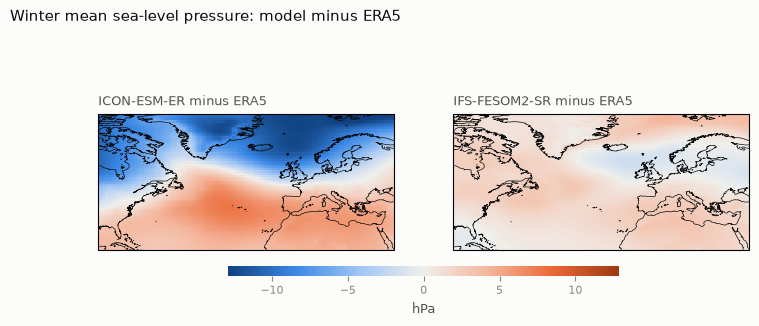
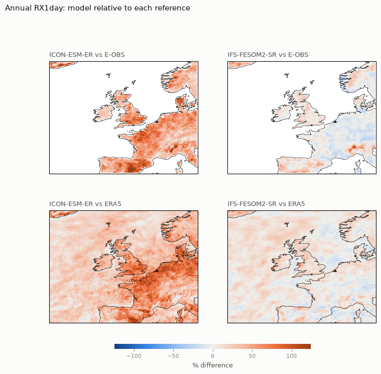
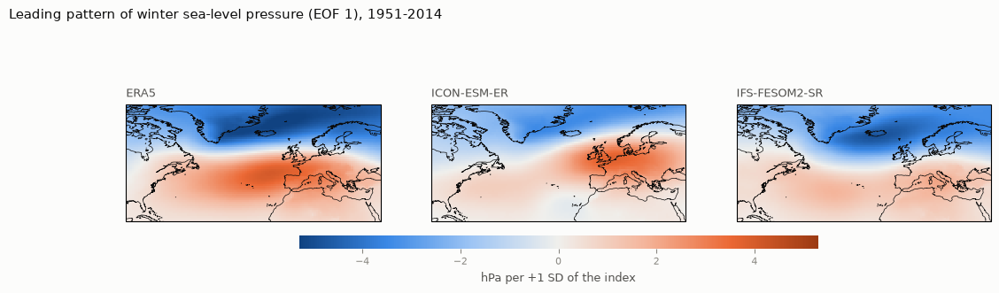
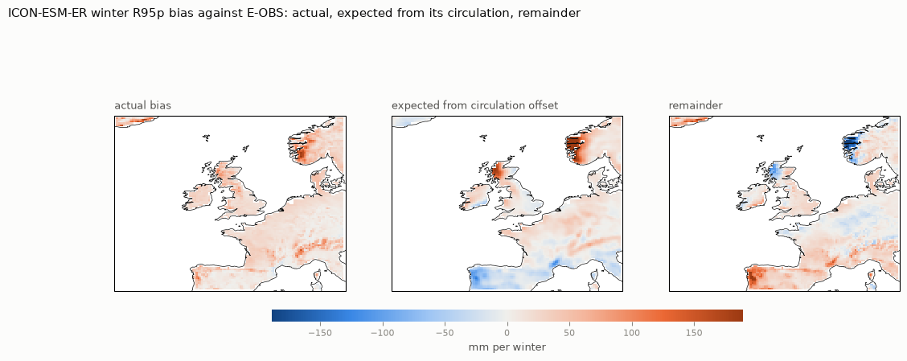
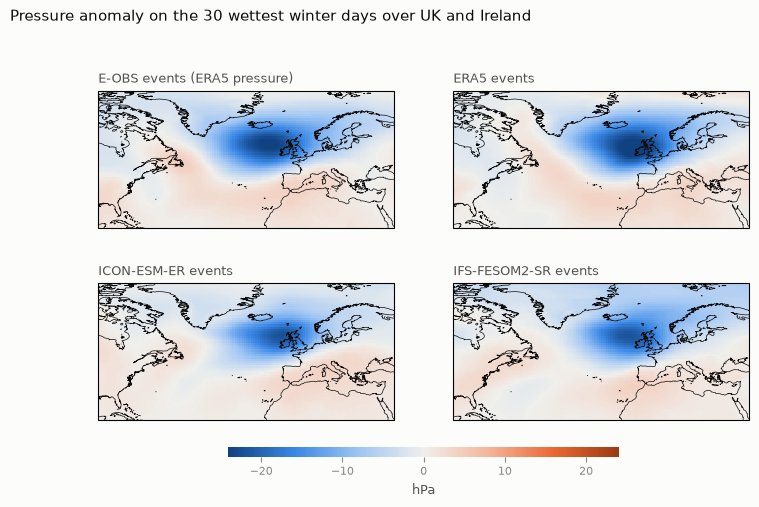
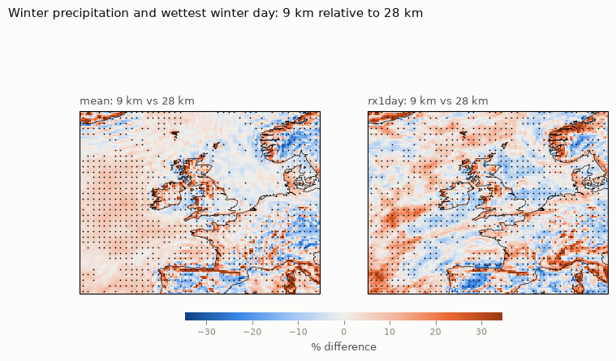
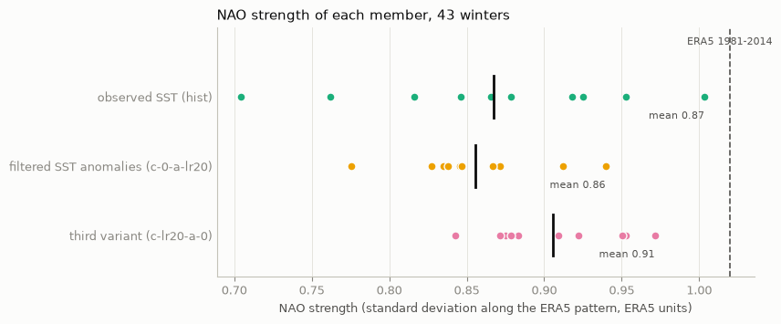

HighRes-EERIE-NorthAtlantic-Evaluation asks how well two high-resolution climate models, ICON-ESM-ER and
IFS-FESOM2-SR, represent winter extremes over the UK and Ireland and their atmospheric drivers, and
how far those conclusions can be trusted. The work follows one chain: each step is checked against
observations before the next one builds on it.
Read this first. Each coupled model is represented by a single run. Single runs carry their own chance
weather, so the verdicts below are indications, not a ranking of the models. The main contribution is the
evaluation method and diagnostic pipeline, which can be rerun on more members, models, CMIP6 and CMIP7.
The story in one figure. Read each row from left to right: (A) average winter pressure minus ERA5,
expressed as an NAO state; (B) the model's NAO pattern against ERA5's (black lines) and its strength; (C) correlation of
winter very-wet-day rain with the NAO; (D) very-wet-day rain relative to E-OBS. ICON-ESM-ER (top) is biased at every
step; IFS-FESOM2-SR (bottom) is close to the references at every step. Winters 1986–2014 (B: 1951–2014), one run per model.
Main message. A credible large-scale circulation is a precondition for credible regional rain
extremes, but not a guarantee: in ICON-ESM-ER the shifted circulation explains only part of the wet bias, and in IFS
higher resolution shifts rain extremes by 5–12% but leaves their link to the NAO within the range that chance alone
produces.
1 · DATA
Find and prepare
Public EERIE output, ERA5 and E-OBS, cut to three nested regions, checked and harmonised.
2 · EVALUATION
Is the climate right?
Mean circulation, temperature and rain; then extremes: RX1day, TXx, R95p.
3 · DRIVERS
Why do extremes happen?
The NAO, its link to extremes, and the weather behind the heaviest rain days.
4 · TRUST
How far to trust it?
Resolution, internal variability between identical runs, and disagreement between references.
close to observationspartly rightclearly biasedfact or method
1 · Data
From 945 public datasets to one tested archive
Which simulations have what we need, and can they actually be read?
945 datasets inventoried on the DKRZ server; 11 runs from two models have all the daily and monthly fields needed.Three domains: North Atlantic (NAO), north-west Europe (extremes), UK and Ireland (headline), plus western Norway and north-west France.Periods: 1950–2014 monthly (64 winters for the NAO), 1985–2014 daily (a standard 30-year period).About 250–300 GB streamed, 4.2 GB kept; every source in the same units, time stamps and grid.
Before trusting extremes: is the basic winter climate credible?
IFS-FESOM2-SR: winter pressure close to ERA5 (typical difference 1.8 hPa, pattern correlation 0.99).ICON-ESM-ER: pressure too low in the north, too high in the subtropics: westerlies too strong; winter rain +29%.Both about 0.8 °C too cold in winter.
Why it matters. A too-strong pressure drop from the subtropics to Iceland drives too-strong
westerlies, which carry more moist Atlantic air onto windward coasts and mountains. ICON-ESM-ER's average winter
therefore looks like a strongly positive NAO winter.
Notebook 03

Extremes
How heavy is the wettest day, how hot the hottest?
IFS-FESOM2-SR: wettest day of the year over UK and Ireland +8% against E-OBS, +17% against ERA5; hottest day within 1 °C of ERA5.ICON-ESM-ER: wettest day +48% / +60%; hottest day about 2 °C too cool.Most of IFS-FESOM2-SR's apparent hot-day deficit against stations is a grid-cell-versus-station effect, revealed by adding ERA5.
Why it matters. ICON-ESM-ER's wet bias covers inland France and Iberia, not only the windward
coasts a too-strong westerly flow would wet. It is far larger than chance: identical runs differ by only 1–3% in these
30-year averages.
Notebook 05

3 · Drivers
The North Atlantic Oscillation
Is the main driver of winter weather realistic?
IFS-FESOM2-SR: recognisable NAO (pattern correlation 0.87), strength 71% of ERA5's.ICON-ESM-ER: leading pattern mixed across two modes, strength 59%; its average winter resembles a +2.3 SD positive NAO.
Why "mixed". ICON-ESM-ER's first two patterns explain 29% and 21% of the variance, closer than
their sampling error allows to separate (North et al. 1982), so the real NAO is split between them (overlaps 0.76 and
0.58). Every model is therefore measured along the common ERA5 pattern.
Notebook 04

From the NAO to extremes
Do positive-NAO winters bring heavier rain extremes, as in the real world?
IFS-FESOM2-SR reproduces the link in sign, pattern and strength (UK and Ireland correlation 0.60).ICON-ESM-ER: right sign in the north (0.36), weak in Norway, wrong sign over north-west France.Observed: 0.51 in E-OBS, 0.35 in ERA5; strong in western Norway (0.81).How certain: over UK and Ireland the bootstrap 95% intervals (about ±0.25) overlap for all four datasets, so 29 winters cannot tell them apart. ICON-ESM-ER's weak link in Norway and wrong sign in France do pass formal tests. No single winter drives any value.
If ICON-ESM-ER's only error were its shifted circulation, how wet would it be?
Method: observed change in rain extremes per SD of NAO × the model's mean circulation offset (2.1 SD along the NAO).Consistent with 38–74% of ICON-ESM-ER's very-wet-day rain bias and 18–39% of its wettest-day bias over UK and Ireland, mostly on windward coasts and mountains.The rest is a broad wet bias: ICON-ESM-ER rains too often (+34% to +43% wet days) and too hard (+21% to +28% rain per wet day). IFS-FESOM2-SR is within about 10% on both.
Reading it. An association supported by diagnostics, not a demonstrated cause. It assumes a
linear response, applied to an offset beyond most ordinary NAO winters.
Notebook 06 · section 11

The weather behind the heaviest rain
Do the models get heavy rain for the right reason?
Both models: the same deep low north-west of the islands as ERA5 on the event day (pattern correlation 0.94–0.95).Build-up two days earlier: IFS-FESOM2-SR 0.85, ICON-ESM-ER 0.72.Storm track 13–17% too active over the UK; persistent highs slightly too rare.
Notebook 09 · 30 wettest winter days per dataset

4 · How far to trust it
Resolution
Same model, same ocean, 9 km instead of 28 km: are rain extremes better?
9 km gives 5–12% heavier winter rain extremes, mostly beyond the spread between 28 km members.Closer to observations over the mountains of western Norway.Overshoots over the UK and Ireland; no overall gain at the 25 km scale compared.
Notebook 08 · 1 run at 9 km, 3 members at 28 km, winters 1986–2014

Internal variability
How much do identical runs differ by chance alone?
NAO strength in ten identical runs: from 0.70 to 1.00 of ERA5's.NAO link to UK and Ireland rain extremes in three identical runs: correlation from 0.04 to 0.33; 9 km (0.19) lies inside that range.Filtering small-scale sea-surface temperature: −1% and +4% change in NAO strength, far inside the spread.
Notebooks 07, 08

What holds
ICON-ESM-ER's circulation bias and a wet bias partly consistent with it, plus a second, broad wet bias of its own; IFS-FESOM2-SR's credible circulation, extremes and NAO link; both models' realistic heavy-rain weather pattern.
What is uncertain
The strength of the NAO link over the UK (bootstrap intervals overlap for all datasets; identical runs disagree, and so do the two references); the exact NAO strength of single members.
What is not tested
Model complexity; air quality; coupled sensitivity to ocean eddies; summer drivers; the future.
In one table
Question
ICON-ESM-ER
IFS-FESOM2-SR
Mean winter circulation
too-strong north–south contrast
close to ERA5
NAO pattern / strength
mixed / 59%
recognisable / 71%
Wettest day, UK and Ireland
+48% to +60%
+8% to +17%
Wet-bias share consistent with the circulation
38–74% (very wet days), 18–39% (wettest day)
offset small (0.2 SD)
Wet days / rain per wet day, UK and Ireland
+34–43% / +21–28%
+3–10% / +5–11%
Hottest day, against ERA5
−2.0 °C
−0.6 °C
NAO link to winter rain extremes
right sign over UK; too weak in Norway, wrong sign in France
reproduced in all three regions
Weather behind the heaviest rain
right pattern, weaker build-up
right pattern and build-up
Storm track over the UK
+17%
+13%
What comes next
More members, to separate model behaviour from chance; CMIP6 and CMIP7 through the same analysis
code; and physical climate storylines that use the event composites to ask how a given type of
heavy-rain winter would look under further warming.
Exploratory results: two coupled models with one member each. Full methods on the methods page; every number comes from the executed notebooks.